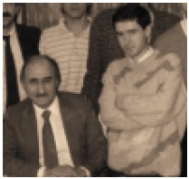
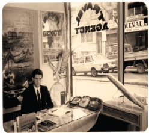
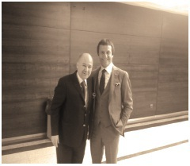
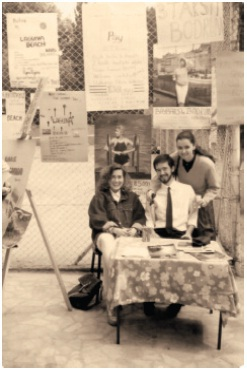

Halı Dükkânına Transfer Oldum, Soyuldum
Lise 3.sınıftayım – Mayıs ayı. Fındıkzade’de Şirvan Halı diye bir halı dükkânı vardı. Bir akşam önünden geçerken gördüm ki dükkân sahibi birkaç yabancı turiste bir şeyler anlatmaya çalışıyor ama anlatamıyor. Yardımcı oldum.
Dedi ki: “Akşamları okul çıkışı gelip burada bana yardımcı olursan sana satıştan yüzde 10 veririm.”
O sıralarda akşam okul çıkışı gidip aldığım bir kız arkadaşım vardı. Halıcının bu teklifinden sonra kızcağıza sadece bir veda mektubu yazdığımı hatırlıyorum. Girişimcinin aşkı ancak bu kadar olur! Ertesi akşam Alman karı-koca bir çift turist geldi. Yaklaşık 1 saatin sonunda 25.000 Marklık bir halı aldılar. Dükkân sahibi de ben giderken yüzde 10’unu, yani tam 2500 Markı nakit olarak bana verdi. Şaşkınlık, zevk ve mutluluk, hepsi bir aradaydı. Şu anda dahi kelime bulamıyorum o anı sizlere ifade etmek için. Neticede her hafta evden aldığım harçlıkla günde sadece 1 kola içebilecek paraya sahip iken, bir anda cebimde 2500 Alman Markı vardı.
* * *
O hafta sonu gittim. Adidas eşofman, spor ayakkabı, gömlek, vs. bir sürü şey aldım kendime. Yine de ancak 500 Markını harcayabilmiştim paramın. Bu arada akşamları halıcıda hazır oldayım. Pazar günleri de açalım dükkânı, tam gün gelebilirim demiştim halıcıya.
Bu arada 2000 mark hep cebimde. Okula onunla gidiyorum, yatağa onunla giriyorum.
O akşam, Fındıkzade’den aşağı doğru inen yolun sonundaki lunaparka gideyim dedim. Lunaparktayım. İnsanlar toplanmışlar, 3 kâğıt denen bir oyun oynuyorlar. Yaklaşık yarım saat dikkatle oyunu izledim. Hemen hemen hepsini biliyordum kâğıtların.
Deneyeyim dedim. Sonuç: Tam 15 dakika içinde 2000 markımın tümünü kaybetmiştim.
İki adamın koluma girip beni Fındıkzade’ye kadar getirdiklerini hatırlıyorum. O olaydan sonra 15 gün yatağımdan dışarı bile çıkmak istemedim. İnsanlardan nefret etmiştim.
Yüce Allah beni 2000 Mark değerinde bir kurstan mezun etmiş ve uygulamalı bu kursta öğrendiğim bütün ömür boyu işime yarayacak bir deneyim olmuştu. Öğrendim ki, ‘şans oyunu’ denilen şeyler aslında ‘şanssızlık oyunu’. Kaybetmeniz için de şansa ihtiyacınız yok! Şunu anladım ki kolay gelen para kolay da gidebiliyordu. Lunapark meselesi bana çok iyi bir hayat dersi olmuştu. O günden bugüne kadar bir tek milli piyango bileti bile almamışımdır.
Ancak şunu da itiraf etmeliyim ki, kazandığım o ilk 2500 Mark hayata bakış açımdaki kırılma noktası oldu. Obama’ya uzanan yolun başlangıcı...
Yaptığım hesap çok basitti. Annem, benim bir saatte kazandığım bu parayı kazanmak için 3 ay boyunca çalışıyordu. Bu hesabı yaptığınız an, zaten rotayı da belirlemiş oluyorsunuz.
Sultanahmet’te Kart Sattım
Üniversite hazırlık dershanesine gitmeme kararı aldım ve gitmedim. Lise sonda her Salı Sultanahmet’e gidiyordum, çünkü ne kadar gereksiz gördüğüm ders varsa hepsi Salı gününe toplanmıştı. Beden Eğitimi, Resim, İş Teknik ve Milli Güvenlik Dersi Salı günüydü.
Sultanahmet’te kartpostalları aldığımız bir yaşlı amca vardı. Önce kartları alıyorduk, akşama kadar satıp akşam da parasını amcaya ödüyorduk. Sultanahmet’te bu kartpostalları satanların cebinde para olmadığı için orada şöyle bir sistem gelişmişti; Önce sat, sonra öde sistemi. Açıkçası bu yaşıma kadar uyguladığım ve artık ‘Baybars Altuntaş’ın Para Kazanma Formülü’ diye ortaya çıkan bu sistem, işte o yıllardan edindiğim bir alışkanlıktı.
Kendi networkunuzu mutlaka oluşturun
Mutlaka insan koleksiyonu yapmaktan hoşlanmalısınız. Bu konuda Türkiye’de belki de en başarılı insanlardan biriyim. Başarımda insan koleksiyonu yapmamın çok önemli katkıları vardır. Melek yatırımcı olarak girişimcilerim benim bu koleksiyonumdan da istifade edebiliyorlar, ki bu da beni ortaklık kurduğum girişimcilere paranın dışında verdiğim en önemli sermaye diye düşünüyorum. İstiyorum ki tüm girişimciler insan koleksiyonu yapmaya çok erken yaşlarda başlasınlar.İşte size kendi takip ettiğim yöntemler:
24.Derneklerle haşır neşir olun.Sadece konunuza giren derneklerle değil, her türlü dernekle irtibatta olun, resepsiyonlarına katılın, networkünüzü genişletin.
25.Tanıştığınız kişilerden kartvizitlerini alın, numaralandırın ve bilgisayarınıza kaydedin. Tanıştıktan en geç 48 saat içinde mutlaka kendileriyle tanıştığınıza ne kadar memnun olduğunuzu belirten bir mail gönderin.
26.Network yapmak yaşam tarzınız olsun. Cebinizde kartvizitiniz olmadan tuvalete bile gitmeyin.
27.Networkünüzü genişletirken interneti sakın ihmal etmeyin. Facebook, Linkedin, Twiter mutlaka olmanız gereken yerler. Hergün mutlaka en az 2 tweet atın. Beni tweet’ten takip edin, facebook sayfama abone olun.
Sultanahmet’te öğrendiğim bir ikinci önemli konu da şuydu: Para kazanmak için ille de paran olması gerekmiyor. Oradaki yaşlı amcanın gözü beni tutmasaydı, bana o kartları vermez ve ben de para kazanamazdım. Ben de şöyle bir taktik uyguladım: Akşamları gidip en erken parayı ödeyen hep ben oldum. Yaşlı amcanın bir anda en yakın arkadaşı olmuştum. Yaşlı amca bütün zabıtaları tanıdığı için benim kısa zamanda Sultanahmet’te prestijim artmıştı. Yaşlı amcaya karşı hep dürüst oldum. Orada öğrendim ki hayatta en büyük sermaye: Dürüst olmak!
* * *
Üniversite tercihlerimi yaptım ve ailem ve arkadaşlarım dâhil hiç kimseye söylemedim. Kısa zamanda hayata atılmayı kafama koymuştum. Bir saatte kazandığım 2500 DM bakış açımı değiştirmişti.
ÖYS tercih formunu tek başıma doldurdum.18 tercih hakkımız olmasına rağmen, 5 tercih yaptım. Okumaya pek niyetim yoktu. Birinci tercihim Boğaziçi Üniversitesi Turizmcilik bölümüydü, 2 yıllık bölümdü, bu yüzden tercih ettim. Diğerleri de Boğaziçi Üniversitesi’nin yabancı dil puanıyla alan bölümleriydi. Nasılsa kazanamayacaktım. Kazanamadığım üniversitenin adı bari Boğaziçi olsun dedim.
Tercihleri gönderdim. Tüm ailem ve okuldaki hocalarım Tıp Fakültesi yazdığımı sanıyorlar.
* * *
Temmuz 1987. Lise bitmiş, yaz tatilindeyim.
Tercihleri gönderdikten sonra yaz tatili gelmiş ve ben iş aramaya başlamıştım. Paranın bol olduğu yer Sultanahmet ve Laleli civarıydı. Nasılsa üniversiteyi de kazanamayacaktım, gözüm kulağım halıcılarda. Şirvan Halıyı artık tercih edemezdim.Sultanahmet’te halıcıların verdikleri komisyonlar yüzde 50’ye kadar çıkıyordu. Ayda bir halı satsam 15.000 Dolar kazanırım diye hesaplıyordum. Fakat halıcılarda iş bulmak o kadar da kolay değildi.
* * *

Remzi Kadıköylü ile beraber
Gazetenin seri ilanlar bölümünde küçücük bir ilan vardı. “Laleli’de seyahat acentesine ofis boy aranıyor.”
Aradım. Telefona çıkan arkadaş “lise öğrencileriyle çalışmıyoruz” dedi, kapadı.Tekrar aradım; “siz bana adresi verin” dedim. Bu acenteye girmeliydim. Ofis boy her yere bir şeyler getirip götüren insan demekti. Böylelikle Laleli’de halıcılara gidip gelirken kendimi sevdirir, oradan bir halıcıya geçerdim.
Hedef kitlenizi
çok iyi belirleyin
İş fikrinizin pazarlama planını hedef kitlenize göre hazırlamanız gerekir. Örneğin İngilizce Kursu satacaksınız. Hedef kitleniz kim? Üniversite öğrencileri mi ? İlköğretim öğrencileri mi? Yurtdışında mastır yapmak isteyenler mi? KPDS sınavına girecek olanlar mı? Deulcom’da burada sıraladığım her hedef kitle için farklı bir pazarlama geliştiriyoruz.
28.Hedef kitleniz pazarlama planınızın nasıl bir şey olacağını büyük ölçüde belirler.
29.Hedef kitlenizi belirlemeden sakın reklam ajansınızın karşısına oturmayın. Boşuna paranız ve zamanınız gider.
30.Hedef kitlenizi belirler belirlemez ilk yapmanız gereken ‘doğru sloganı’ bulmanızdır.Hedef kitlenize en fazla 3 veya 4 kelimeyle hitap etmeyi becerebilmelisiniz. Bu mesaj, onları anladığınızı – ihtiyaçlarının ne olduğunu bildiğinizi – bu ihtiyaçlara en kaliteli şekilde ve en hesaplı ücretlerle karşılık verdiğinizi içermeli.
Fınıdıkzade’den Laleli’deki Gençtürk caddesine yürüyerek Köy-tur’u buldum. Remzi Kadıköylü, acentenin sahibi, ilk patronum oldu ve 80 kişi arasından ben seçildim. Asgari ücretle işe başladım.
Bu arada acenteye yabancı turistler geldiğinde Sultanahmet’te öğrendiğim İngilizceyle uçak biletleri hakkında bilgi de veriyordum.
Aradan yaklaşık 1 hafta geçti. Remzi Bey odasına çağırdı:
“Senin İngilizcen de var. Geç şu masada uçak bileti düzenlemeye başla. Ticketing bölümüne alıyorum seni” diyerek ofis boy’luktan terfi ettirdi.
Ancak ben hep sonuç odaklıydım. Ofisboy’luk belki daha alt kadro işiydi ama benim acenteye girişimin sebebi piyasada adam tanıyıp yatay geçiş yapmaktı. Pek hoşlanmadım Remzi Bey’in talimatından ama “hayır” demek hiçbir zaman kitabımda yazmadığı için “çok teşekkür ederim” diyerek masaya geçtim.
Masam acentenin tam girişindeki masaydı. Acenteye her giren önce bana geliyordu.

Köyturda iken...
Çok kısa zamanda anladım ki bu ticketing işinde çok para var.1987 yılı, Türkiye’ye müthiş bir Arap akını vardı. Ayrıca, İran – Irak savaşından dolayı ABD’ye ve İsveç’e gitmek, daha doğrusu kaçmak isteyen bir sürü müşterimiz vardı. Hem Araplar, hem İranlılar uçak biletlerini aldıktan sonra bahşiş de bırakıyorlardı.
Bu işi çok sevmiştim. Acentede benim dışımda 3 kişi daha ticketing personeliydi. O sıralarda günde, o zamanın parasıyla 7 milyon TL bilet satışını tek başıma gerçekleştiriyordum. Hem Remzi Bey’den aldığım maaş, hem de bahşişlerimle lise son sınıfı yeni bitirmiş 17 yaşında genç bir insan olarak ayda ciddi sayılacak bir gelirim oluşmuştu. Aynı zamanda bir yandan da acentede sarraflık yapmaya başladım. Acenteye gelen ve cebinde Dolar veya Alman Markı olan müşterilerin paralarını Türk Lirasına çevirip, aldığım Dolar ve Markları da Kapalıçarşı’da satıyordum.
İşin bu sarraflık yanı, benim bugünkü başarımın temelidir diyebilirim. Herkesten önce “paranın kokusunu” alma yeteneğim o sıralarda gelişti. Acenteye giren müşterinin cebinde Dolar mı var, Mark mı var; Libya’ya mı bilet isteyecek yoksa Stockholm’e mi daha kapıyı açarken anlıyorduk.
Sahte parayla gerçek parayı da kısa zamanda dokunur dokunmaz anlar hale gelmiştim. Sarraflık yaparken gelişen bu yeteneğimin bana hayatımda çok önemli bir anahtar olacağını çok sonraları anladım. Sahte insanla gerçek insanı ayırt etmek için de bir dokunuş yeterli olmaya başlamıştı bana.
* * *
Bu arada acenteye haftanın 7 günü sabah 08.00, akşam 22. 00 arası geliyordum. Remzi Bey akşamları da bana muhasebe defteri tutmayı öğretiyordu. Bileti satıyor ve akşamda muhasebesini işliyordum. Pazar günleri dâhil çok zevkle çalışıyordum.
Ahmet Zorlu Endonezya'da Benim Yüzümden...
Ancak bir pazar günü “keşke doğmasaydım ya da madem doğdum bu işe hiç girmeseydim” dedirtecek bir olay oldu. Her zamanki gibi acentede Pazar günü tek başımaydım. Telefon çaldı.Açtım. Karşımda Ahmet Zorlu. Endonezya’dan arıyor.
Ahmet Zorlu ve üst düzey 5 yöneticisini Jakarta emniyet amirliğinde vizeleri olmadığı için göz altına alınmışlardı. Ahmet Bey, telefonda oldukça kızgın.
Hat kesilmiş gibi yapıp, telefonu kapadım, Remzi Bey’i aradım. Remzi Bey Kumburgaz’da yazlıktaydı, hemen kalktı acenteye geldi. Ahmet Zorlu’yu yatıştırmak mümkün değildi. Her ne kadar Remzi Bey’in Denizli’den akrabası da olsa pek yatışacak gibi durmuyordu.
Biletlerle ben ilgilenmiştim ancak biletleri yabancı bir havayolu kesmişti. Biletleri düzenlerken vize kontrolünü yapmak, biletleri kesenin göreviydi ancak havayolundaki ticketing uzmanı Endonezya vizesini atlamıştı. O tamam deyince tabii ben de kontrol etmedim. O muhtemelen bana güvendi, ben de ona güvendim. Kabak, Ahmet Zorlu’nun başına patladı.
Bu, Ahmet Zorlu ile 1988 yılında son görüşmem oldu. Bir daha bizim acenteden bilet almadı.
Ancak, tam 23 yıl sonra, 2011 yılında Lütfi Kırdar Spor Salonunda 3000 gencin katılımıyla gerçekleşen Doğa Kolejleri T-MBA zirvesinin açılış anonsunda bir anda irkildim:
“Bu yılki zirvemizin açılışını ülkemizin önde gelen 2 önemli girişimcisi yapacaklar. Onlar için kuvvetli bir alkış istiyorum sizlerden. Sayın Ahmet Zorlu ve Sayın Baybars Altuntaş, sahneye bekliyoruz sizleri efendim...”

Konferans sonrası, Ahmet Abi’ye konuşmacı arkadaşının yani benim kim olduğunu bir hatırlatayım dedim. İkimizin de dehşetle andığı o anı, bugün ikimizin de yüzünü güldüren bir anı olmuştu. Bu anın hatırası olarak da yandaki fotoğrafı çektirdik.
Köytur’da çalışırken birkaç ay sonra kara haber geldi. Boğaziçi Üniversitesi İngilizce Öğretmenliği Bölümünü kazanmıştım.Son tercihim tutmuştu ve bu hiç de beklemediğim bir şeydi.Tam da işleri yoluna koymuş, Laleli’de çevre edinmiş, para kazanmaya başlamışken, bu sonuca seveniyim mi üzüleyim mi bilemedim. Remzi Bey dedi ki, “Hiç üzülme. İlk yıl nasılsa hazırlık sınıfında okuyacaksın.Part time devam edersin burada.”
Ekim ayından itibaren öğlene kadar acenteye gidiyordum, öğleden sonra Taksim’den 559C ile okula. Akşamları da saat 20.00 gibi tekrar acenteye dönüyor, akşam 22.00’e kadar muhasebeye yardımcı oluyordum Remzi Bey’e. Ta ki Remzi Bey acenteyi Çelebi Turizm’e satana kadar devam etti bu böyle.
* * *
Ertesi yıl üniversitelerin taban puanları açıklandı. Boğaziçi Üniversitesi İngilizce Öğretmenliği Bölümü’nün taban puanı 565,035 idi. Yani benim puanım. Son tercihimi sonunculukla kazandığımı anladım. Sınavda 1 soru daha yapamasaydım, hayatımın akışı nasıl değişirdi diye düşünürüm bazen.
* * *
Remzi Bey, Köytur’u Çelebi Turizm’e satınca, yeni Genel Müdür Halim Güreş, öğrenci olduğum için benimle çalışamayacağını söylemişti. Böylelikle çok sevdiğim işimden de ayrılmış oldum. Köytur’dan ayrılınca hızlı bir şekilde özel ders vermeye koyuldum. Cumartesi Pazar günleri akşama kadar özel ders veriyordum. Ayrıca, yine Laleli’de çocuk turları düzenleyen bir seyahat acentesinde çalışmaya başlamıştım. Okulun bahar tatilinde de Bodrum’a tur düzenliyordum. Bodrum’a tur düzenlemek için güney kampusta basket sahasının önüne stand açıyordum.Boğaziçi Üniversitesi’nde senetle tur düzenleme ve 3 taksit sistemini getiren bendim. Bütün okulu afişlerle donatmıştım.
Manken resimlerinin üzerine şu sloganı yazıyordum: “Baybars’la Bodrum. 90 – 60 – 90.”
Baybars’ı bir otobüs markası sanıyordu herkes. 90 – 60 – 90 ödeyecekleri taksit miktarlarıydı ancak onu da mankenlerin vücut ölçüsü sanıyorlardı. Kampanya tutmuştu.
Yan masada Kıbrıs’a tur düzenleyen arkadaşlardan Kıbrıs turu düzenlemeyi öğrendim. 1990’lı yıllarda Magosa’da Laguna Beach’e, sanırım 10 kez tur düzenledim. Bu turlar sırasında beni en çok zorlayan kısım Laguna Beach’in çalışmayan asansörleriydi.

2010 yılında Doğu Akdeniz Üniversitesi Öğrencilerince Kıbrıs’ta Yılın İş Adamı Seçilince, KKTC Cumhurbaşkanı Talat bana ödül verdi. Cumhurbaşkanlığı Sarayı’ndaki ödül töreni sonrası Magosa’da DAÜ’de konferansa gitmişken Laguna Beach’e uğradım, anılarımı tazelemek için. İnanmayacaksınız belki ama, aradan 22 yıl geçmişti ve asansörler hâlâ çalışmıyordu. Kıbrıs’ı işte bu yüzden olsa çok seviyorum. Zaman tüneli gibi...Zamanın Durduğu Ada !
Rakiplerinizi çok iyi analiz edin
Güzel Türkçemizde çok güzel bir laf vardır. 'İstim arkadan gelsin'. Bu söz girişimciler için bazen çok yararlı bir öğüttür, bazen de zararlı bir öğüt. İş fikrinizi oluşturup işin tutup tutmayacağını anlamaya çalışırken yapmanız gereken en önemli hareket ‘rakiplerinizi’ analiz etmenizdir. Bu analizin sonucu, belki de bu işe hiç girmemeniz gerektiği sonucunu ya da hiç vakit kaybetmeden girmeniz gerektiği sonucunu ortaya çıkaracaktır. Ancak gözlemliyorum ki, pek çok girişimci bu basamağın hakkını vermiyorlar.
Ben Deulcom’u kurarken, yaptığım işi yapan hiç kimse yoktu. Bu yüzden bu basamağı kolaylıkla geçtim. Ancak, benden sonra gelenler benim ne yaptığımı çok iyi analiz edebilselerdi, benim o kadar kısa zamanda işleri büyütmem o kadar kolay olmazdı.
Rakiplerin analizini yaparken şu noktalar çok önemli. Kâğıdı kalemi elinize alıp kendi ürünleriniz ve rakiplerinizin ürünlerini aşağıdaki maddelere göre karşılaştırın.
31.Sizin ürününüzle onların ürünleri arasında ne farklar var ?
32.Onlar kaça satıyorlar, siz kaça satmaya niyetlisiniz ?
33.Hangi pazarlama kanallarını kullanıyorlar ve bu pazarlama kanallarından ne sonuç alıyorlar ?
34.Eğer sizin ürün veya hizmetiniz diğerlerinden farklıysa, bu farkı tüketiciye çok iyi belirtmelisiniz. Rakiplerinizden daha iyi bir ürünü daha ekonomik bir rakama tüketiciye sunuyorsanız, yaşadınız demektir! Ancak bu ekonomik alternatif, tüketicide ‘ucuz malın yahnisi’ sonucunu da çıkartmamalıdır. Rakipleriniz otobüs duraklarına reklam veriyorsa, siz de otobüslerin içine reklam verin. Rakiplerinizin boş bıraktığı pazarlama kanallarını mutlaka değerlendirin.